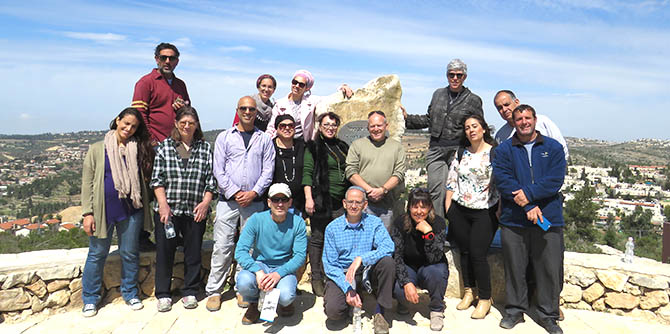

הריטריט, אשר נשא את הכותרת "דילמות של מנהיגות: הזדמנויות, אילוצים ותירוצים (וכל מה שביניהם)" התקיים התקיים ב-15 וב-16 במרס בנווה אילן שבמבואות ירושלים המערביים. מטרתו הייתה ליבון עיוני והתנסותי של מושגי היסוד האלה, ובעיקר של הצומת שבו הם נפגשים. אילוצים נוכחים תמיד בשדות הפעולה שלנו, מספקים תירוצים להימנעות מעשייה ומציבים אתגר של הוצאת מתוק מעָז.
היום הראשון נפתח בסיור בקסטל, אתר שסביבו שזורים סיפורי מלחמת העצמאות ובהם סיפורים של מנהיגות, רעות ונחישות, לצד סיפורים על אילוצים, הזדמנויות וגם תירוצים לניצחונות ולהפסדים.
במאי הקולנוע יוחאי רוזנברג הציג לנו את ההתבוננות הרפלקטיבית על המושגים האלה באמצעות סרטי קולנוע, ובעזרת גיבורים של סרטי תעודה וסרטים עלילתיים. עליזה פרוכטמן, מאמנת ליצירתיות, העבירה סדנת "הכרה יוצרת" וזימנה לנו מצבים שתבעו מאתנו אלתור ויצירתיות מתוך מודעות עצמית והקשבה לזולת. באמצעות הרב דוב זינגר התנסינו בלימוד דיאלוגי שבו בחנו לעומק מעקשים והזדמנויות שמזמן הדיבור – הזיקה המורכבת בין דיבור היוצא מן הלב לדיבור שנכנס אל הלב.
ביומו השני של הריטריט קיימנו שלוש פעילויות קבוצתיות ייעודיות, סביב שלושה מוקדי עניין: טקסטים שהעמיתים כתבו לקראת הריטריט, התבוננות עצמית במה שמושך את עינינו במרחב, והתבוננות עצמית בסוגי העמדות שאנו נוקטים בסיטואציות שונות.
הריטריט היה מחבר ומגבש – הוא חידד את הקשר שבין המושגים שבכותרתו והדגים איך הם שלובים בכל עשייה המובילה לשינוי.

{kind=link}